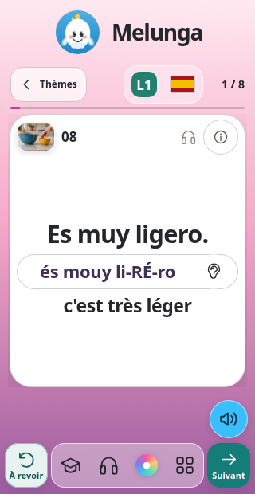
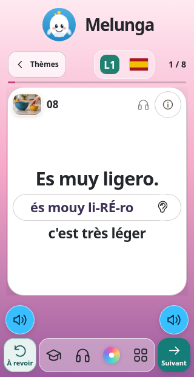
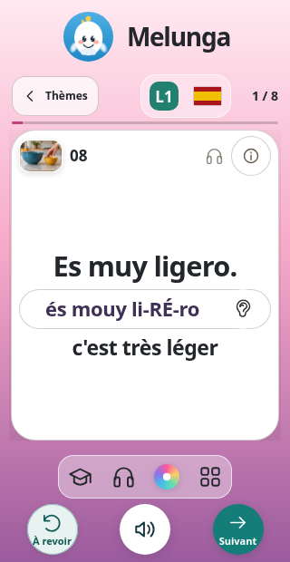
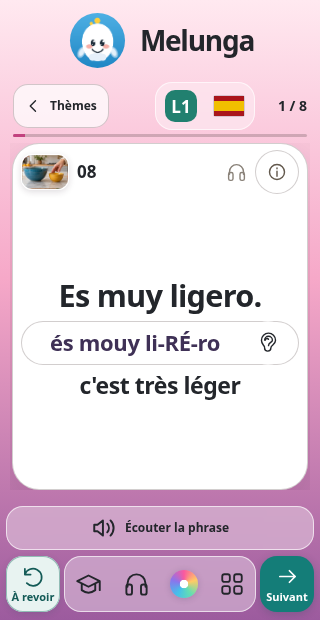

01
Écoute à droite
Un seul haut-parleur, juste au-dessus de Suivant. Le pouce droit passe de l’écoute à la suite sans traverser l’écran.

Melunga · Propositions mobile
Quatre positions pour rapprocher le haut-parleur de À revoir et Suivant, en gardant les quatre raccourcis Révisions, Voix, Couleur et Menu.
Dans les quatre versions, niveau et langue sont réunis en haut dans une capsule translucide. Le cours, le logo et la taille des textes restent les mêmes.
01
Un seul haut-parleur, juste au-dessus de Suivant. Le pouce droit passe de l’écoute à la suite sans traverser l’écran.

02
Un haut-parleur au-dessus de chaque action, comme demandé. Les deux lisent exactement la même phrase ; chacun choisit son pouce.

03
ConseilléeUne disposition inspirée des commandes d’appel : un haut-parleur central entre À revoir et Suivant. Les quatre raccourcis restent juste au-dessus.

04
Une large touche translucide « Écouter la phrase » au-dessus de la barre. Toute sa surface répond au clic, depuis le pouce gauche ou droit.
